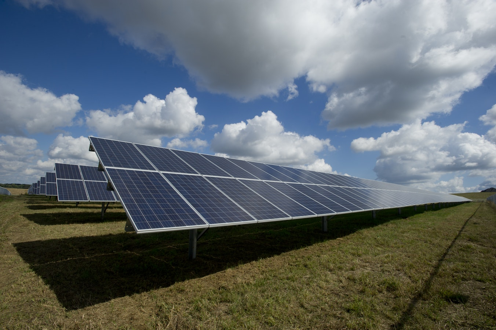
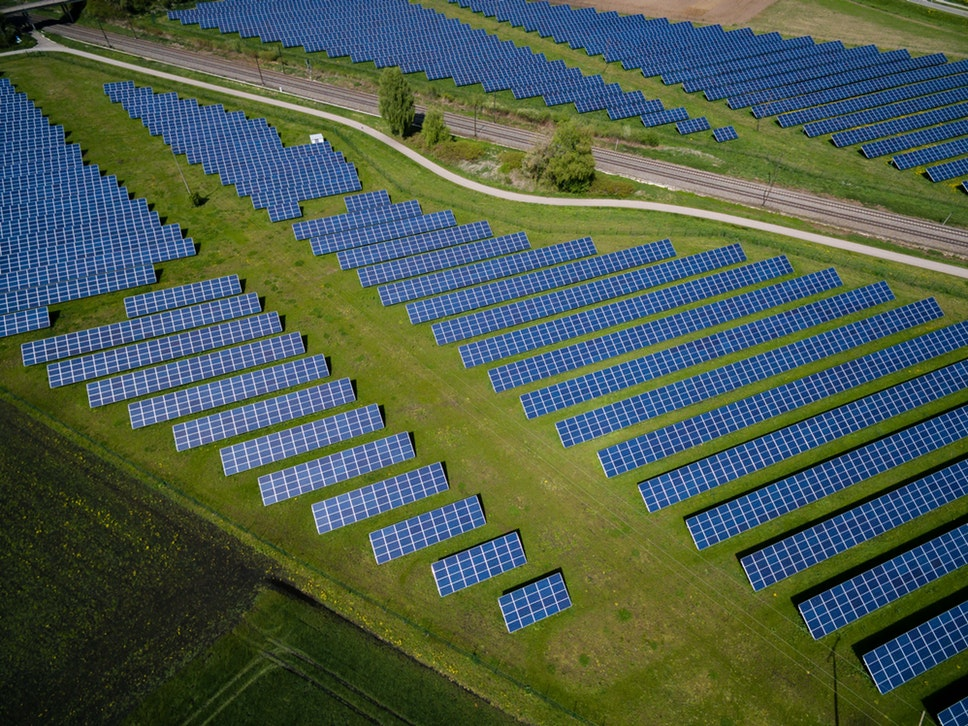

Солнечная энергия – это преобразование энергии от солнечного света в электричество, либо
непосредственно с использованием фотоэлектричества (PV), косвенно использующего концентрированную
солнечную энергию, либо комбинацию.
Коммерческие концентрированные солнечные электростанции были впервые разработаны в 1980-х годах.
Солнечные электростанции становятся быстрой недорогой низкоуглеродной технологией
для использования
возобновляемой энергии от солнца.
Принци работы солнечных электростанций
Солнечный элемент или фотогальваническая ячейка (PV) – это устройство, которое преобразует свет в
электрический ток с использованием фотовольтаического эффекта.

Массив фотоэлектрической системы питания или системы PV создает мощность постоянного тока (DC),
которая колеблется от интенсивности солнечного света. Для практического использования обычно
требуется преобразование в определенные требуемые напряжения или переменный ток (AC) с помощью
инверторов. Солнечные фотомодули соединенные вместе формируют массив и связываются с инвертором,
который производит мощность при желаемом напряжении, а для переменного тока – желаемую частоту /
фазу.
Преимущество использования солнечных электрстанций
Солнечные электростанции имеют ряд преимуществ среди альтернативных источников энергии:
Основным преимуществом является экологическая чистота солнечной энергии. И хотя соединения
кремния, которые входят в состав солнечных модулей могут нанести небольшой вред природе, в
сравнении с последствиями сжигания угля, это воздействие ничтожно.
Длительное использование. Для того чтобы ухаживать за солнечными панелями не нужно особых
знаний, поэтому они находят применение в быту, и промышленности. Эксплуатационный срок в среднем
составляет около 25 лет.
Несколько квадратных метров панелей, смогут обеспечить необходимым количеством энергии небольшую
деревню. Страны, где в году больше преобладают солнечная погода, устанавливают полноценные
солнечные электростанции.
Современные конструкции, не так дороги как их предшественники, поэтому позволить их себе
установить может каждый, тем более что уже в течении 5 – 10 лет, они полностью окупаются.
Еще одним преимуществом солнечных батарей является экономичность (если установить батарею на
крыше частного дома, в летний период вам вообще не придется платить за электричество).
Достаточное количество энергии они дают начиная с мая по октябрь.
Постоянство. Солнце - это неисчерпаемый ресурс, и хотя в облачный, зимний или дождливый день
количество энергии снижается, от человеческого фактора поступление энергии не будет зависеть.
Автономность. Вам не придется думать о том, что электричество может в любой момент отключится,
так как панели работают автономно, и не зависят от технических неполадок.
Вариативность. Современные конструкции позволяют изменять конфигурацию панели, так как удобно
вам. Если вам потребуется добавить мощность, существующую конструкцию можно будет легко
дополнить новыми элементами.
Для их работы нет необходимости применять топливо, а это также существенная экономия.
В отличии от такого альтернативного источника энергии как ветровые системы, работа солнечных
батарей не сопровождается шумом.

Такая система может быть подключена к сети везде, где это возможно. Также, такая система может работать
автономно, но с учетом активности только в светлую пору, такие системы дополняют накопительными
элементами – аккумуляторами, либо монтируют в связке с другими энергогенерирующими приспособлениями –
ветро-генераторами, дизель-генераторами, и т.д..
Цена СЭС
СЭС мощностью 5 кВт под Зелёный Тариф стоимость от 3 858$
Характеристика оборудования:
Тип панелей – поликристалл
Угол наклона — 34°;
Дополнительная нагрузка на кровлю — 20 кг/м кв.;
Мощность инвертора — 5,0 кВт
Ориентация — юг;
Площадь солнечных панелей – 31,16 м2
Экономические показатели:
Годовой доход — до 1282,73 $;
Срок окупаемости — до 6 лет.
(с учетом Вашего потребления)
Выработка эл. энергии за год — до 5905 кВт*ч;
Величина зеленого тарифа — 0,18 Евро/кВт*ч;
Гарантии:
на солнечные панели – 10 лет;
на инверторное оборудование – 5 лет;
на монтажные работы – 2 года
СЭС мощностью 10 кВт под Зелёный Тариф стоимость от 7 284,60$
Характеристика оборудования:
Тип панелей – поликристалл
Угол наклона — 34°;
Дополнительная нагрузка на кровлю — 20 кг/м кв.;
Мощность инвертора — 10,0 кВт
Ориентация — юг;
Площадь солнечных панелей – 62,32 м2
Экономические показатели:
Годовой доход — до 2565,46 $;
Срок окупаемости — до 5.5 лет.
(с учетом Вашего потребления)
Выработка эл. энергии за год — до 11 812 кВт*ч;
Величина зеленого тарифа — 0,18 Евро/кВт*ч;
Гарантии:
на солнечные панели – 10 лет;
на инверторное оборудование – 5 лет;
на монтажные работы – 2 года
СЭС мощностью 15 кВт под Зелёный Тариф стоимость от 9 963,20$
Характеристика оборудования:
Тип панелей – поликристалл
Угол наклона — 34°;
Дополнительная нагрузка на кровлю — 20 кг/м кв.;
Мощность инвертора — 15,0 кВт
Ориентация — юг;
Площадь солнечных панелей – 91,84 м2
Экономические показатели:
Годовой доход — до 3848,18 $;
Срок окупаемости — до 4.5 лет.
(с учетом Вашего потребления)
Выработка эл. энергии за год — до 17 715 кВт*ч;
Величина зеленого тарифа — 0,18 Евро/кВт*ч;
Гарантии:
на солнечные панели – 10 лет;
на инверторное оборудование – 5 лет;
на монтажные работы – 2 года
СЭС мощностью 20 кВт под Зелёный Тариф стоимость от 12 630,80$
Характеристика оборудования:
Тип панелей – поликристалл
Угол наклона — 34°;
Дополнительная нагрузка на кровлю — 20 кг/м кв.;
Мощность инвертора — 20,0 кВт
Ориентация — юг;
Площадь солнечных панелей – 123 м2
Экономические показатели:
Годовой доход — до 5130,91 $;
Срок окупаемости — до 4.2 лет.
(с учетом Вашего потребления)
Выработка эл. энергии за год — до 23 621 кВт*ч;
Величина зеленого тарифа — 0,18 Евро/кВт*ч;
Гарантии:
на солнечные панели – 10 лет;
на инверторное оборудование – 5 лет;
на монтажные работы – 2 года
СЭС мощностью 30 кВт под Зелёный Тариф стоимость от 18 776,40$
Характеристика оборудования:
Тип панелей – поликристалл
Угол наклона — 34°;
Дополнительная нагрузка на кровлю — 20 кг/м кв.;
Мощность инвертора — 30,0 кВт
Ориентация — юг;
Площадь солнечных панелей – 183,68 м2
Экономические показатели:
Годовой доход — до 7696,37 $;
Срок окупаемости — до 4.1 лет.
(с учетом Вашего потребления)